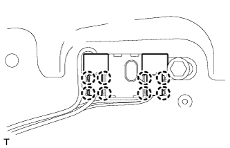

ФИЛЬТР ПОДАВЛЕНИЯ ПОМЕХ > УСТАНОВКА |
| 1. УСТАНОВИТЕ КОНДЕНСАТОР НАСТРОЙКИ РАДИОПРИЕМНИКА |
 |
Установите конденсатор настройки радиоприемника со жгутом проводов на дверь багажного отделения, предварительно закрепив его зажимом.
Установите конденсатор настройки радиоприемника и закрепите его болтом.
|  |
Установите крышку контактов со жгутом проводов на конденсатор и введите в зацепление 8 захватов.
| 2. УСТАНОВИТЕ ПАНЕЛЬ ОБЛИЦОВКИ ДВЕРИ БАГАЖНОГО ОТДЕЛЕНИЯ В СБОРЕ |
Для моделей без кронштейна запасного колеса на двери багажного отделения:
Введите в зацепление 15 фиксаторов, чтобы установить облицовочную панель двери багажного отделения.
Вверните болт.
Для моделей с кронштейном запасного колеса на двери багажного отделения:
Введите в зацепление 16 фиксаторов, чтобы установить облицовочную панель двери багажного отделения.
Вверните болт.
Для моделей с противоположно расположенными сиденьями:
Введите в зацепление 15 фиксаторов, чтобы установить облицовочную панель двери багажного отделения.
Вверните болт.
Заверните винт.
Введите в зацепление захват, чтобы установить крышку.
| 3. УСТАНОВИТЕ ДЕРЖАТЕЛЬ ВНУТРЕННЕЙ РУЧКИ ДВЕРИ БАГАЖНОГО ОТДЕЛЕНИЯ (для моделей с противоположно расположенными сиденьями) |
Введите в зацепление 5 захватов, чтобы установить оправу внутренней ручки двери багажного отделения.
Вверните винт.
| 4. УСТАНОВИТЕ КРЫШКУ ЗАМКА ДВЕРИ БАГАЖНОГО ОТДЕЛЕНИЯ (для моделей без кронштейна запасного колеса на двери багажного отделения) |
Введите в зацепление 6 захватов, чтобы установить крышку замка двери багажного отделения.
| 5. УСТАНОВИТЕ ЯЩИК ДЛЯ ИНСТРУМЕНТОВ |
Введите в зацепление 2 захвата, чтобы установить ящик для инструментов.
| 6. УСТАНОВИТЕ ВЕРХНЮЮ ПАНЕЛЬ ЯЩИКА ДЛЯ ИНСТРУМЕНТОВ В СБОРЕ |
 |
Введите в зацепление 3 захвата.
Установите верхнюю панель ящика для инструментов, как показано на рисунке.
| 7. УСТАНОВИТЕ ОБЛИЦОВОЧНУЮ НАКЛАДКУ ДВЕРИ БАГАЖНОГО ОТДЕЛЕНИЯ |
 |
Введите в зацепление 4 захвата.
Установите облицовочную накладку двери багажного отделения, как показано на рисунке.
| 8. УСТАНОВИТЕ ПРАВУЮ БОКОВУЮ ОБЛИЦОВКУ ДВЕРИ БАГАЖНОГО ОТДЕЛЕНИЯ |
Установите боковую облицовку двери багажного отделения, закрепив ее 2 фиксаторами.
| 9. УСТАНОВИТЕ ЛЕВУЮ БОКОВУЮ ОБЛИЦОВКУ ДВЕРИ БАГАЖНОГО ОТДЕЛЕНИЯ |
Установите боковую облицовку двери багажного отделения, закрепив ее 2 фиксаторами.
| 10. УСТАНОВИТЕ ЦЕНТРАЛЬНУЮ ОБЛИЦОВКУ ДВЕРИ БАГАЖНОГО ОТДЕЛЕНИЯ |
Введите в зацепление 4 фиксатора и установите центральную облицовку двери багажного отделения.